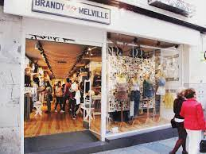
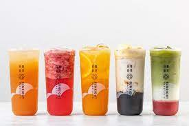
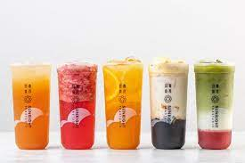

Zuyan Huang
As an 18-year-old pre-business major at UCR, my passion lies in exploring the intricate world of finance. I'm enthusiastic about understanding the dynamics of financial markets and the strategic decisions that drive economic growth. Through rigorous coursework and active participation in finance-related clubs and events, I am cultivating the knowledge and skills necessary to thrive in this competitive field. As I pursue my career aspirations in finance, I'm excited about the opportunities for growth, learning, and making meaningful contributions to the financial landscape. With a blend of academic rigor, personal interests, and community engagement, I am poised to embark on this journey with dedication and enthusiasm.
Beyond academia, I find inspiration in the world of entertainment, particularly through Kdramas and anime. These mediums offer me more than just entertainment; they provide insight into diverse cultures and storytelling traditions. Collecting Sonny Angels has become a cherished hobby, allowing me to appreciate artistry and whimsy in everyday objects.
In my personal life, I enjoy exploring cosmetics, especially experimenting with lip gloss shades as a form of self-expression. Additionally, my friendships are invaluable, providing support, laughter, and unforgettable memories. In my commitment to community service, I volunteer with the Red Cross during my free time, fulfilling my desire to make a positive impact and give back to society.
Experience
Volunteer
• Educated the public about disaster preparedness, safety procedures, and health-related issues through workshops, presentations, and community events.e
• Recruited, trained, and coordinated volunteers for various Red Cross programs and initiatives.
• Participated in fundraising events, campaigns, and donation drives to support Red Cross programs and services.
• Assisted with office tasks, data entry, and administrative duties to help ensure smooth operation of Red Cross programs and initiatives.
Education
UC Riverside
Portfolio



